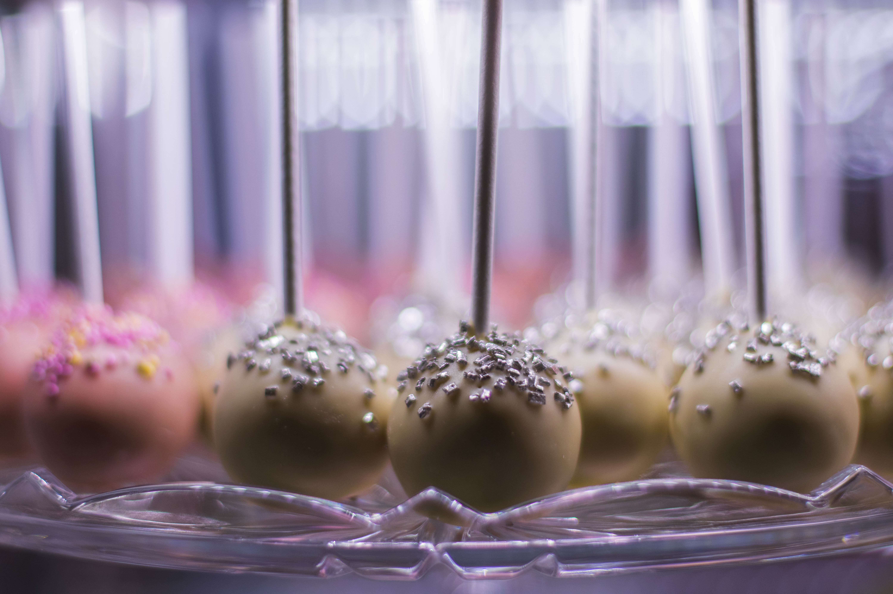

Back to home
Cake Pops

Ingredients - Cake Pops
- 15 ounce box white cake mix , cook according to package
directions in a 9×13" pan
- 10 ounce package dark chocolate melting wafers
- 10 ounce package white chocolate melting wafers
Ingredients - Buttercream Frosting
- 1 stick salted butter, softened
- 2 - 2 1/2 cups powdered surgar
- 1 teaspoon vanilla extract
- 1 tablespoon heavy cream or milk
Instructions:
- In a medium bowl, whip the butter.
- Add in 1 cup of powdered sugar. Mix until combined.
- Add the vanilla and additional powdered sugar, a little
at a time.
- Add 1 Tablespoon of heavy cream or milk to make the
frosting thick and creamy. It should hold a point.
- In a large bowl, crumble the prepared cake into fine
crumbs (make sure it has cooled completely before
crumbling).
- Add 2 spoonfuls of buttercream frosting to the cake.
Combine with your hands or a spoon. Gradually add more
frosting until the cake holds together if squeezed. You
don't want it too crumbly or it won't hold together.
- Using a medium cookie scoop, scoop out 1 scoop of cake
mixture. Roll into a ball and place onto a plate. Repeat
until all the cake mixture has been formed into balls.
Freeze balls for about 10 minutes.
- Right before they are ready to be taken out of the
freezer, melt the dark chocolate and the white chocolate
in two separate microwave safe bowls. Begin by heating
for 30 seconds and then stirring. Once coated in
chocolate, gently tap the stick on the side of the melting
dish to let the excess drip off. You can also spin or
twirl the cake pop to remove the excess.
- Before the chocolate starts to harden, add sprinkles,
jimmies or other decorations. If decorating with more
chocolate, let the chocolate covering harden on the cake
pop. Then, using a spoon or fork, drizzle with the
additional melted chocolate.
- Push the cake pop stick into a styrofoam block or use a
glass filled with rice to hold them upright. The chocolate
will be set in about an hour. Store for 3-4 days in an
airtight container in a cool place.
Back to home